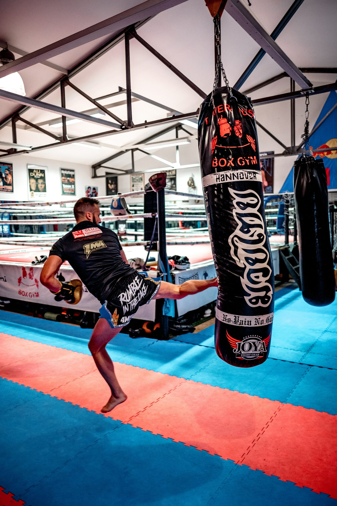
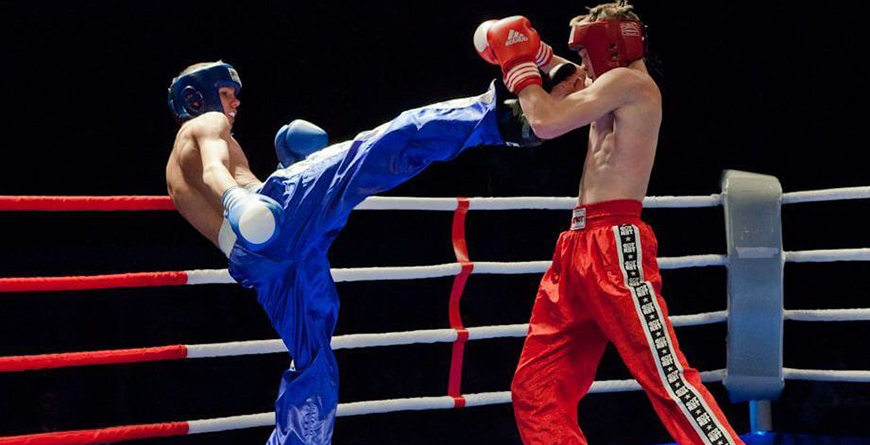
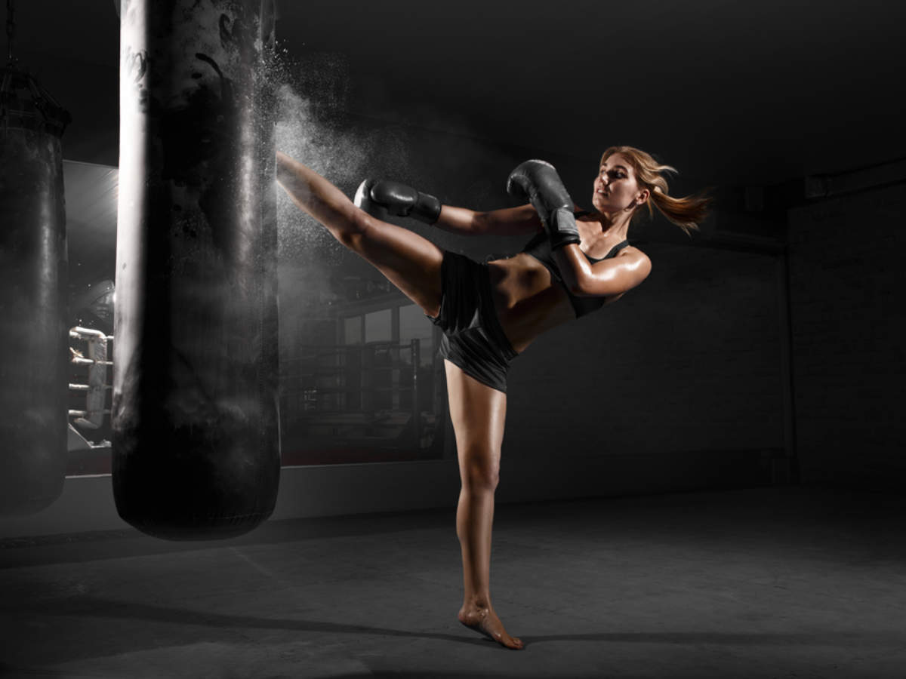
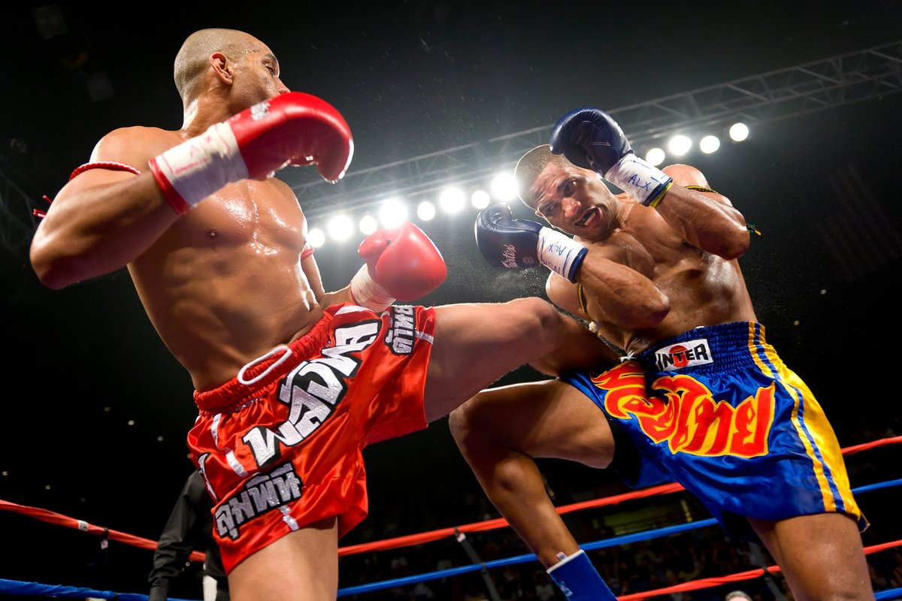

Kickboxing to rodzaj sztuki walki, w której zwyczajowo uderza się rękami i nogami. Kickboxing łączy różne rodzaje sztuk walki: karate, wuszu, taekwondo, boks tajski i angielski.




Istnieje kilka dziedzin kickboxingu, jednak jego elementy obecne są również w innych dyscyplinach sportowych. Na przykład są używane w aerobiku, to znaczy, że nawet kobiety mogą ćwiczyć ten rodzaj sztuk walki. Kickboxing to widowiskowy i popularny sport, który z roku na rok ma coraz więcej fanów. Sportowcy są gotowi na wszystko - długie obciążenia, nieoczekiwane tricki na ringu i nagły atak.
Korzyści z uprawiania Kickboxingu:
Zmniejsza stres
Nastrój się poprawia
Rozwój koordynacji ruchów
Spalanie kalorii. Trening pozwala na utratę ponad 800 kalorii na godzinę, co przyspiesza metabolizm. Te ćwiczenia są idealne do odchudzania